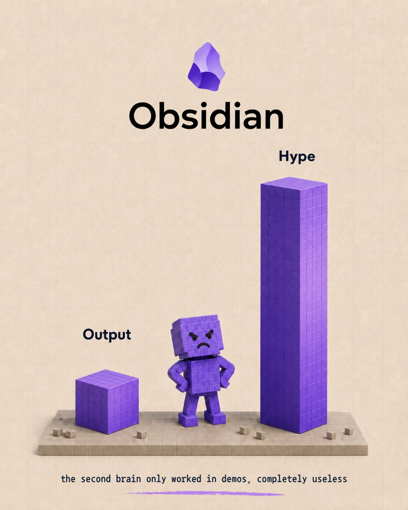
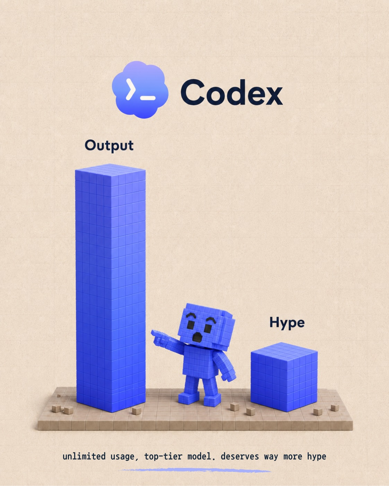
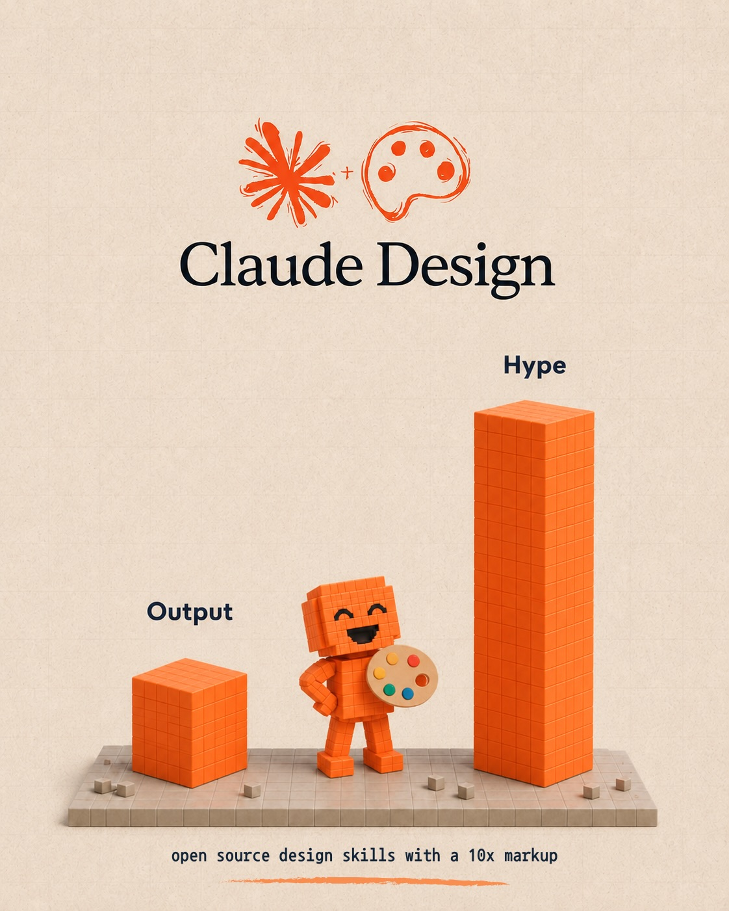
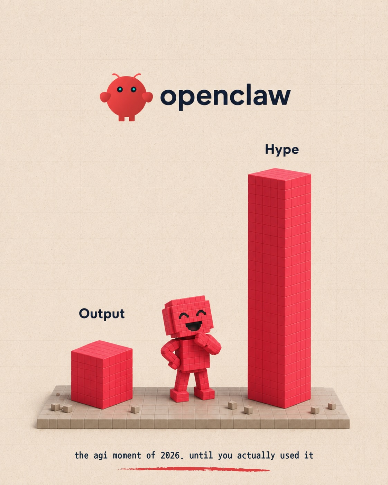
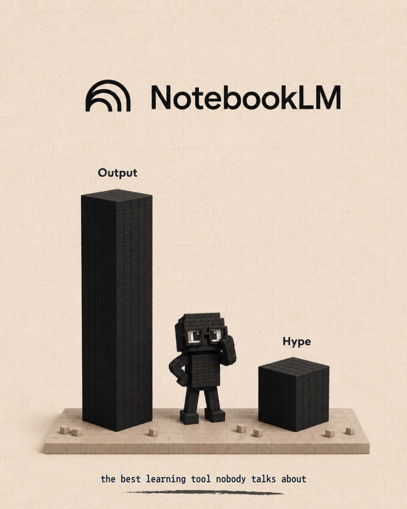
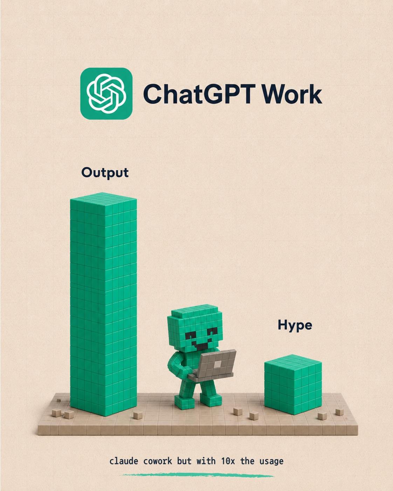
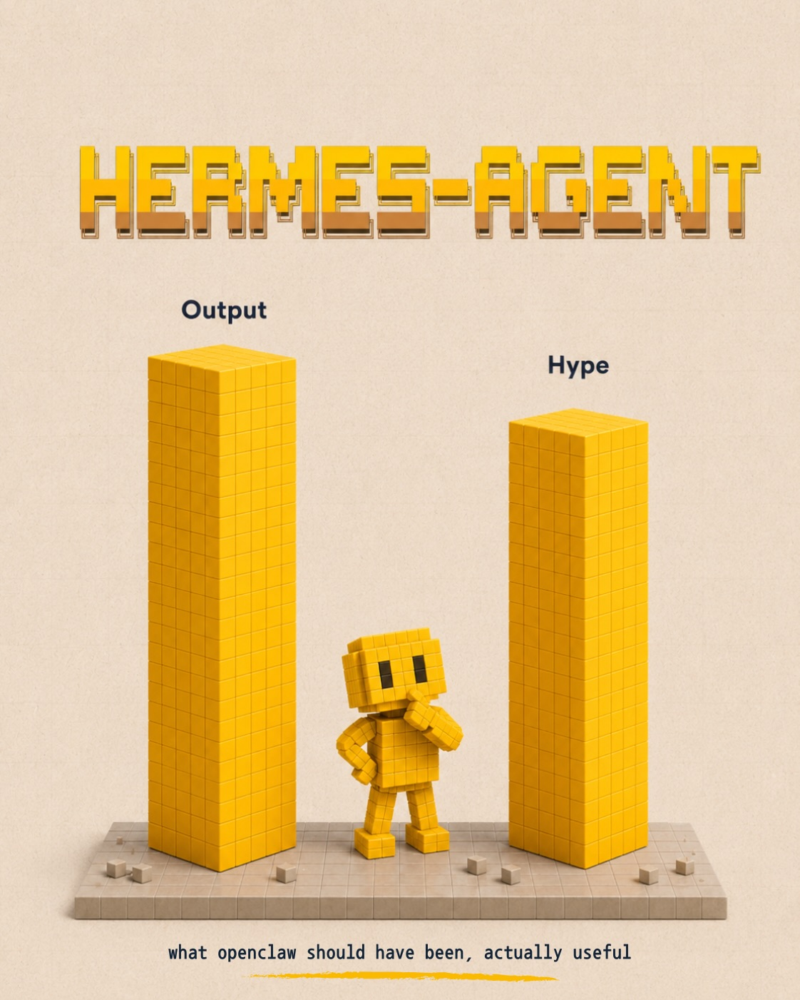
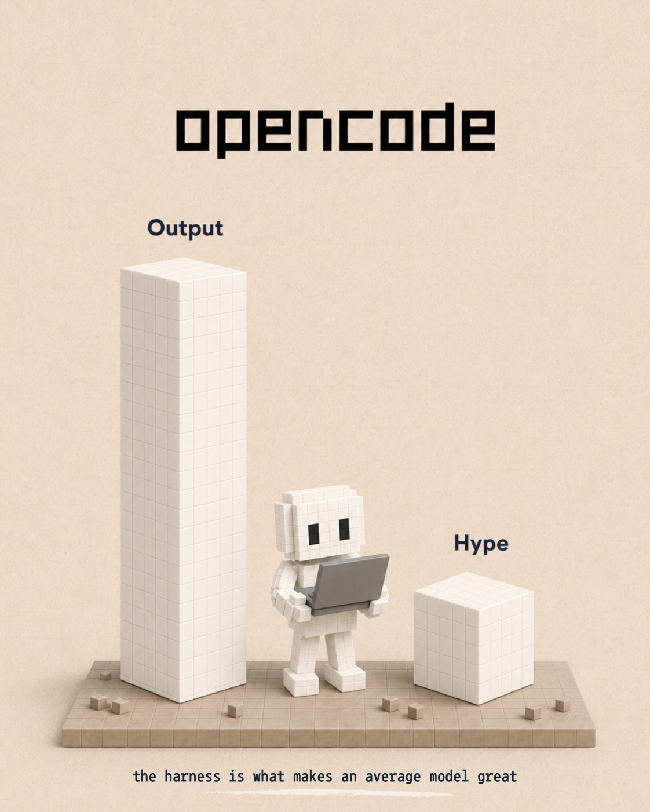
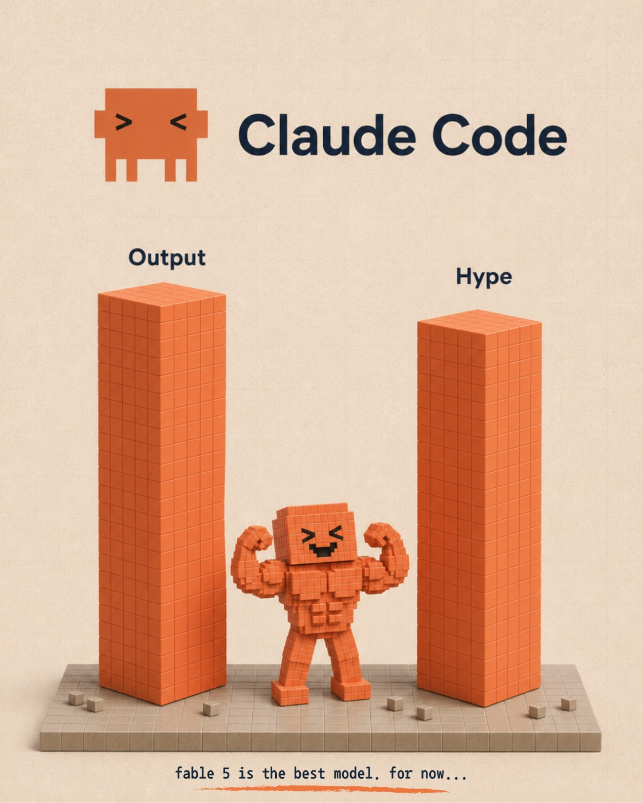

Instagram Post

the most hyped AI tool of
carousel (10 slides) (enriched by ClaudeClaw)
Summary
Obsidian Hype Output the second brain only worked in demo... | Codex Output Hype unlimited usage, top-tier model | Claude Design Output Hype open source design skills with ... | openclaw Output Hype the agi moment of 2026 | NotebookLM Output Hype the best learning tool nobody talk... | ChatGPT Work Output Hype claude cowork but with 10x the u... | HERMES-AGENT Output Hype what openclaw should h...
Caption
the most hyped AI tool of 2026 is completely useless ⬇️
my honest tier list after few years of building with AI.
some of these tools have massive hype waves and produce nothing. some are quietly doing the best work of the year and nobody talks about them.
a few takes from the slides:
→ the “agi moment” of the year turned out to be a demo
→ the second brain thing was always for larp
→ the best coding setup right now costs way less than you think
i also made a full breakdown of all 27 tools i use, ranked by hype vs output.
✍️ comment TOOLS and i’ll send it to you
#ai #aitools #aitoolsranked
1
Obsidian Hype Output the second brain only worked in demos, completely useless
A 3D rendered meme depicts a purple crystal logo and the word "Obsidian" above a bar chart comparing a small "Output" cube and a tall "Hype" bar, with an angry purple block character standing between them on a platform.
2
Codex Output Hype unlimited usage, top-tier model. deserves way more hype
A 3D rendered image depicts a blue block-figure pointing at a tall blue bar labeled "Output", standing on a blocky platform next to a smaller blue cube labeled "Hype", with a "Codex" logo at the top.
3
Claude Design Output Hype open source design skills with a 10x markup
An orange block character holding a painter's palette stands between a short orange block labeled "Output" and a tall orange block labeled "Hype," all on a grey block base, with "Claude Design" and a logo at the top.
4
openclaw Output Hype the agi moment of 2026. until you actually used it
A red block character stands between two red bar graphs labeled "Output" and "Hype," with the "Hype" bar being much taller than the "Output" bar, all set against a textured beige background.
5
NotebookLM Output Hype the best learning tool nobody talks about
A 3D infographic displays two black block structures, one tall labeled "Output" and one short labeled "Hype," with a blocky character standing between them on a light brown base, all beneath the "NotebookLM" logo.
6
ChatGPT Work Output Hype claude cowork but with 10x the usage
A 3D illustration shows the ChatGPT logo and text at the top, with a tall green bar labeled "Output" and a shorter green cube labeled "Hype" on a brown platform, and a green block-figure character holding a laptop standing between them.
7
HERMES-AGENT Output Hype what openclaw should have been, actually useful
A 3D pixel art image displays a small yellow character standing between two tall yellow bars labeled 'Output' and 'Hype', with the title 'HERMES-AGENT' at the top and a caption at the bottom.
8
opencode Output Hype the harness is what makes an average model great
A 3D rendered infographic shows a blocky white robot holding a laptop, standing between a tall bar labeled 'Output' and a shorter cube labeled 'Hype', all on a tiled platform against a beige background.
9
Claude Code Output Hype fable 5 is the best model. for now...
A 3D pixel art image displays two tall orange bar graphs labeled "Output" and "Hype", with a muscular, smiling orange pixel character standing between them on a grey platform.
10
this was only 9 tools. comment “TOOLS” for all 27
A red pixelated character points at a white pixelated speech bubble on a beige platform, set against a textured light orange background.
All slides







